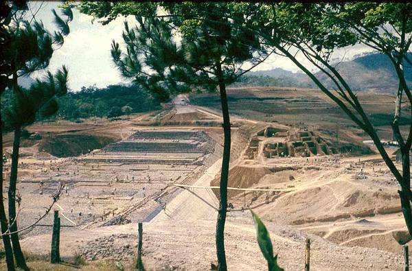

Beim Bau des großen Staudamms Waduk Darma bei Kuningan wurden alle Steine von Hand herangeholt, kein Lastwagen, nicht einmal Pferdekutschen sind zu sehen. Von diesem Großprojekt hieß es 1960, das es zur Regulierung des Wasserflusses für die Reisfelder dienen sollte.
Als ich 14 Jahre später Kuningan wieder besuchte, wurde mir erzählt, dass der Damm das Wasser von den Reisfelden wegnahm und zu den extrem wasserbedürftigen Zuckerrohrplantagen ins Flachland führte. Die Plantagen gehörten den herrschenden Militärs, und es war erstaunlich, wie deutlich die Indonesier, die sonst politisch sehr zurückhaltend waren, über den Wasserdiebstahl in Rage gerieten. Wenn der Reisanbau betroffen war, dann fielen die Schranken der Zurückhaltung.